Giới thiệu
khoa học dữ liệu
Học kỳ I, năm học 2026–2027
Trường Đại học Công nghệ, ĐHQGHN
Bài 1
Nhập môn
khoa học dữ liệu
Một bảng số đã là tri thức chưa?
Và ai đã khiến câu hỏi ấy thành một ngành?
Tổng quan buổi học
- Dữ liệu là gì — Hume, năm cách nhìn, ba câu nói
- Khoa học dữ liệu là giao của ba lĩnh vực
- Lịch sử khoa học dữ liệu, có mốc, ý nghĩa và nguồn
- Vibe coding — prompt Inside Airbnb: QA, KPI, EDA, K-means, dashboard
- Cách học, chuyên cần, giữa kỳ, cuối kỳ
- Hai mươi giáo trình, từ toán tới big data
1.
Dữ liệu là gì?
Năm cách nhìn. Không có một định nghĩa bao hết.
Câu hỏi mở
Mặt trời đã mọc 1.000 ngày.
Điều đó có bảo đảm ngày thứ 1.001 nó sẽ mọc không?
Nguồn: David Hume, An Enquiry Concerning Human Understanding, mục IV, 1748. Con số 1.000 là cách hỏi lại luận điểm ấy, không phải câu chữ trong sách.
1. Bản ghi về thế giới
Data mượn từ Latin datum: điều được cho. OED thấy từ này từ giữa thế kỷ XVII.
facts or information, especially when examined and used to find out things or to make decisions
Sự kiện hoặc thông tin, nhất là khi được xem để tìm ra điều gì, hoặc để quyết định.
Ví dụ: 38,5°C cần nơi đo, dụng cụ, thời điểm và đơn vị.
Nguồn: Oxford English Dictionary, mục data · Oxford Learner's Dictionaries.
2. Một khác biệt nhận ra được
A datum is a putative fact regarding some difference or lack of uniformity within some context.
Một datum là một điều được coi là sự kiện, về một khác biệt, hoặc một chỗ không đồng nhất, trong một bối cảnh.
Nguồn: Floridi, Stanford Encyclopedia of Philosophy, “Semantic Conceptions of Information”, mục 1.3.
3. Biểu diễn để xử lý được
Representation of facts, concepts, or instructions in a manner suitable for communication, interpretation, or processing by humans or by automatic means.
Biểu diễn sự kiện, khái niệm hoặc chỉ dẫn, theo cách người hoặc máy có thể truyền, diễn giải hay xử lý.
Ví dụ: một con mèo có thể là ảnh trên màn hình, mảng pixel, chuỗi byte, vector, hoặc nhãn cat.
Nguồn: NIST Computer Security Resource Center, mục data, dẫn NIST SP 800-160 Vol. 1 Rev. 1.
4. Có ngữ cảnh mới thành thông tin
Data.gov: data là một giá trị, hoặc một tập giá trị, đại diện cho một khái niệm. Data thành information khi được phân tích, có thể cùng dữ liệu khác, để rút ra nghĩa và có ngữ cảnh.
| Giá trị | Khi có ngữ cảnh |
|---|---|
| 120 | Một số, chưa rõ nghĩa |
| 120 km/h | Tốc độ một xe |
| 120 đơn hàng | Số đơn trong một khoảng thời gian |
| 120 triệu đồng | Một khoản tiền |
| 120 ms | Thời gian một hệ thống phản hồi |
Nguồn: Data.gov, Data vs. information. DAMA UK định nghĩa information là tri thức có nghĩa trong một bối cảnh. DAMA UK Glossary.
Định nghĩa của một tổ chức chuẩn
Data: reinterpretable representation of information in a formalized manner suitable for communication, interpretation, or processing.
Dữ liệu là cách biểu diễn thông tin theo một dạng có quy ước, để có thể truyền, diễn giải hoặc xử lý lại.
Nguồn: ISO/IEC 2382:2015, Information technology — Vocabulary.
Ẩn dụ hay gặp nhất
The world’s most valuable resource is no longer oil, but data.
Nguồn: The Economist, 6/5/2017.
Kỹ năng mà dữ liệu đòi hỏi
The ability to take data — to be able to understand it, to process it, to extract value from it, to visualize it, to communicate it — that’s going to be a hugely important skill.
Lấy được dữ liệu rồi còn phải hiểu, xử lý, rút giá trị, vẽ ra và nói cho người khác hiểu.
Nguồn: McKinsey Quarterly, Hal Varian on how the web challenges managers.
2.
Khoa học dữ liệu
là gì?
Giao của ba lĩnh vực.
Giao của ba lĩnh vực
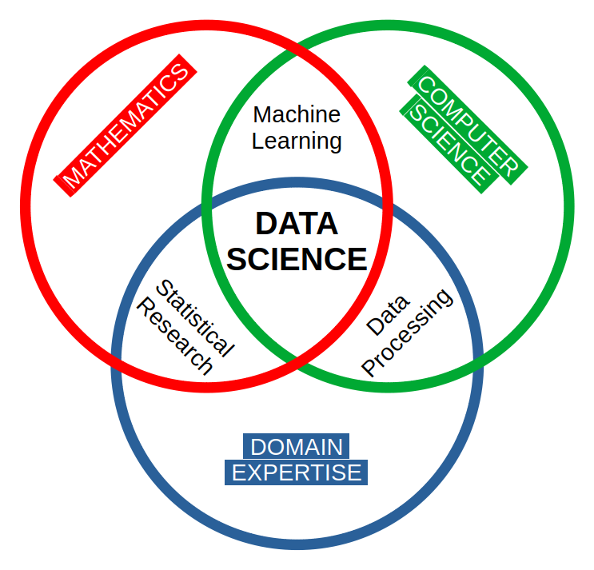
Khoa học dữ liệu là phần chung của toán học, khoa học máy tính và kiến thức nghiệp vụ.
Nhãn trên hình là mathematics, computer science và domain expertise. Đây là một khung giải thích phổ biến, không phải định nghĩa duy nhất, cũng không phải luật rằng mọi việc cần ba phần bằng nhau. Conway (30/9/2010) gọi ba phía là kỹ năng lập trình, toán–thống kê, và kiến thức chuyên ngành. Drew Conway, 2010.
Toán học
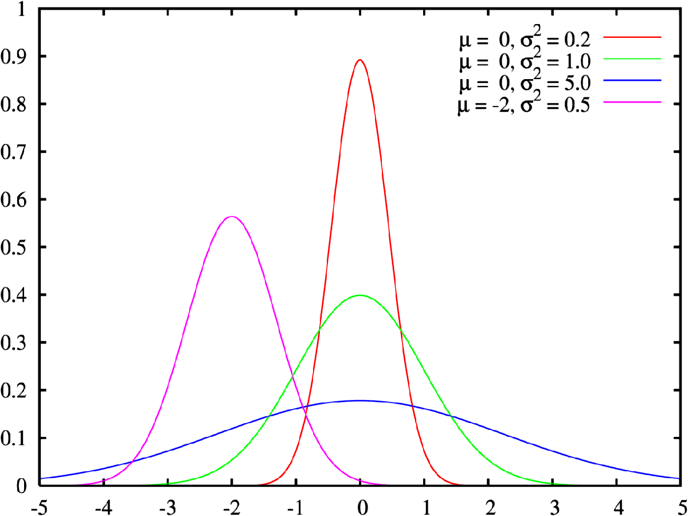
Biến dữ liệu thành bằng chứng: mô tả hiện tượng, xây mô hình, đánh giá độ tin của kết luận.
Sáu mảng toán hay gặp
- Xác suất, thống kê — bất định, kiểm định. Ví dụ: thuốc
- Đại số tuyến tính — vector, ma trận. Ví dụ: embedding
- Giải tích — tối ưu bằng gradient. Ví dụ: học sâu
- Tối ưu hóa — nghiệm dưới ràng buộc. Ví dụ: giao hàng
- Toán rời rạc, đồ thị — quan hệ, cấu trúc. Ví dụ: mạng xã hội
- Phương trình vi phân — đổi theo thời gian. Ví dụ: dịch bệnh
Khoa học máy tính
Xử lý dữ liệu, và biến phương pháp thành thuật toán cùng hệ thống.
Sáu việc trên máy
- Thuật toán, cấu trúc dữ liệu — tìm, sắp xếp, lập chỉ mục, truy vấn
- Cơ sở dữ liệu — lưu và lấy dữ liệu có cấu trúc
- Tính toán song song, phân tán — tập quá lớn cho một máy
- Hiện thực mô hình — huấn luyện chạy được và tối ưu được
- Kỹ nghệ phần mềm — kiểm thử, phiên bản, hệ thống đáng tin
- Bảo mật, quyền riêng tư — kiểm soát truy cập, giữ dữ liệu nhạy cảm
Nguồn: ACM Data Science Task Force, 2021 — các nhóm thuật toán và lập trình, quản lý dữ liệu, hệ thống dữ liệu lớn, học máy, phát triển phần mềm, quyền riêng tư. Báo cáo còn yêu cầu thêm toán, thống kê, và một miền ứng dụng.
Quy mô đổi cách tính
Một thuật toán phân loại có thể chạy tốt trên 10.000 bản ghi, rồi chậm hoặc hết bộ nhớ ở 10 tỷ bản ghi.
Kiến thức nghiệp vụ
Rộng hơn kiến thức kinh doanh. Là hiểu biết về lĩnh vực tạo ra dữ liệu.
Ví dụ các lĩnh vực: y tế, tài chính, giáo dục, logistics, sinh học, đồ họa 3D.
Việc máy không tự quyết
- Cần dự đoán điều gì?
- Dữ liệu sinh ra trong hoàn cảnh nào?
- Biến nào có nghĩa với việc đang xét?
- Sai lầm nào gây hậu quả lớn nhất?
- Kết quả tốt về thống kê có hữu ích khi làm việc thật không?
Ví dụ: độ chính xác 95%
Ví dụ về sàng lọc một bệnh hiếm. Không phải kết quả của một nghiên cứu đã công bố.
- Mô hình chủ yếu đoán “không mắc bệnh” vẫn có thể đạt độ chính xác cao, và bỏ sót người bệnh.
- Người trong nghề chỉ ra chi phí của âm tính giả, ngưỡng cảnh báo, và quy trình dùng kết quả.
3.
Lịch sử
khoa học dữ liệu
Từ xác suất thế kỷ XVII tới mô hình nền năm 2026.
Không có một ngày khai sinh
- Khoa học dữ liệu hình thành ở chỗ giao nhau của thống kê, toán, khoa học máy tính, cơ sở dữ liệu và tri thức ngành.
- Nó không phải tên mới của trí tuệ nhân tạo, cũng không phải tên mới của thống kê.
- Tukey, Naur, Wu và Cleveland là bốn cách nói khác nhau — không phải bốn ứng viên cho một ngôi “người sáng lập”.
Sáu thời kỳ, có chỗ chồng nhau
Các khoảng năm cố ý chồng lên nhau. Ngành không bắt đầu tại một năm.
Xác suất và sai số
Phạm vi công cộng, Wikimedia
Chân dung truyền thống
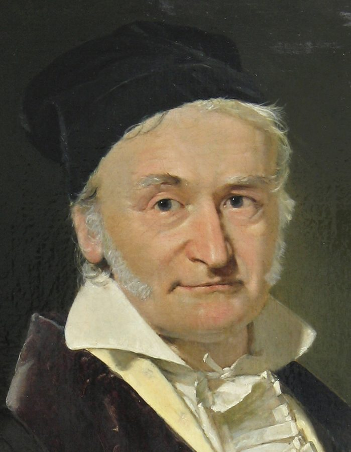
Phạm vi công cộng
| Mốc | Sự kiện | Ý nghĩa |
|---|---|---|
| 1654 | Pascal và Fermat trao đổi thư về trò chơi may rủi | Xác suất trở thành cách lập luận có hệ thống về bất định |
| 1763 | Richard Price công bố bài của Thomas Bayes sau khi Bayes mất. Không có chân dung nào được xác thực là Bayes | Niềm tin về một giả thuyết được cập nhật khi có dữ liệu mới |
| 1805 / 1809 | Legendre công bố bình phương tối thiểu năm 1805. Gauss hệ thống hóa trong Theoria motus năm 1809 | Sai số giữa dự đoán và quan sát trở thành thứ có thể tối ưu |
Nguồn: MacTutor — Pascal · Fermat · Bayes, 1763 · Gauss, 1809.
Dữ liệu phải đổi được quyết định
- Bà dùng số tử vong và điều kiện vệ sinh trong quân đội để tranh luận cho cải cách y tế.
- Biểu đồ diện tích cực của bà để người ra quyết định nhìn thấy bệnh có thể phòng được, không chỉ đọc một bảng.
Biểu đồ Nightingale vẫn đọc được
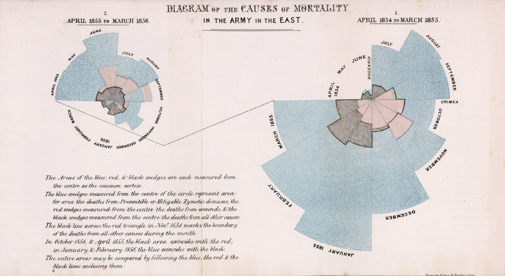
Nêm xanh là tử vong do bệnh có thể phòng hoặc giảm. Nêm đỏ: thương tích. Nêm đen: nguyên nhân khác. Bản in khoảng 1858, phạm vi công cộng.
Thống kê thành bộ công cụ
| Mốc | Sự kiện | Ý nghĩa |
|---|---|---|
| 1900–1901 | Pearson hệ thống hóa tương quan, hồi quy và kiểm định chi-bình phương. Cùng Weldon và Galton lập Biometrika (1901) | Thống kê dùng được ngoài hình học thuần túy: sinh học, y, khoa học xã hội |
| 1935 | Fisher, The Design of Experiments: ước lượng hợp lý cực đại, ANOVA, ngẫu nhiên hóa | Mô hình phức tạp không cứu được dữ liệu thu thập sai |
Nguồn: MacTutor — Karl Pearson · Fisher, 1935.
Máy tính làm được phép tính, và đo được tin

Ảnh phạm vi công cộng. Bài báo là năm 1936.
Phạm vi công cộng. Bài báo là năm 1948.
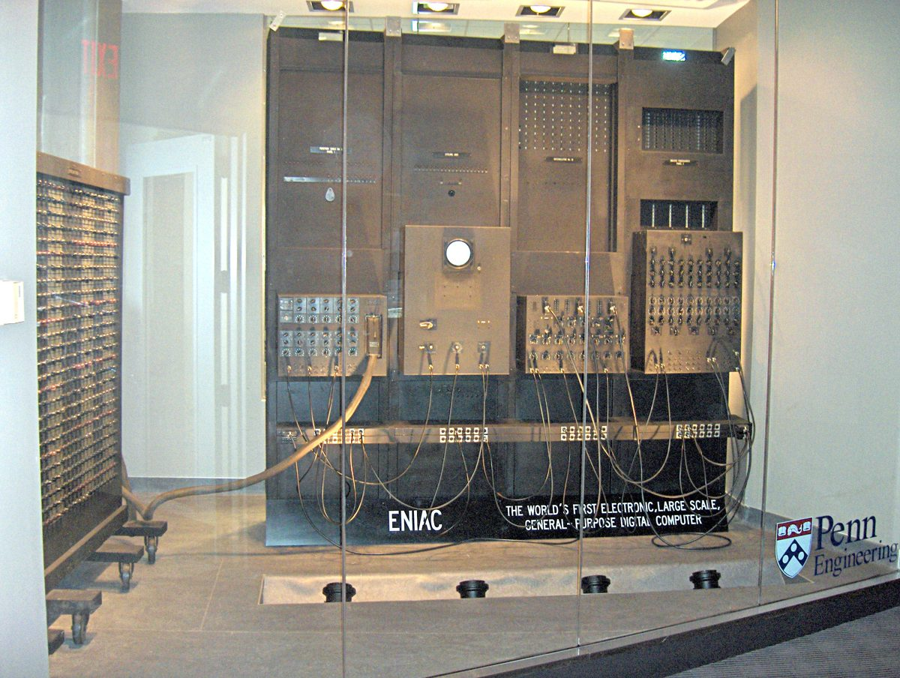
Ảnh sau này, CC BY-SA 3.0
| Mốc | Sự kiện | Ý nghĩa |
|---|---|---|
| 1936 | Turing, On Computable Numbers: mô hình máy tính tổng quát | Xử lý dữ liệu lớn sau này đứng trên lý thuyết tính được |
| 1946 | ENIAC vận hành: tính lặp trên máy điện tử, vượt quy mô tính tay | Thống kê bắt đầu chuyển từ sổ sách sang quy trình tự động |
| 1948 | Shannon, A Mathematical Theory of Communication | Entropy, mã hóa, truyền tin trong nhiễu — nền của nén và của học máy |
Nguồn: Turing, 1936 · Computer History Museum — ENIAC · Shannon, 1948.
Hai lối đi vào “khoa học về dữ liệu”
John Tukey, 1962
The Future of Data Analysis: phân tích dữ liệu rộng hơn thống kê suy luận. Gồm cả thiết kế thu thập, diễn giải và công cụ tính.
Peter Naur, 1966–1974
Năm 1966 ông dùng datalogy. Năm 1974 ông nói tới khoa học về dữ liệu đã được xác lập, và về các quá trình xử lý dữ liệu.
Nguồn: Tukey, 1962 · Donoho, 2017 · Harvard Data Science Review — lịch sử thuật ngữ.
Dữ liệu được tổ chức, rồi được khai phá
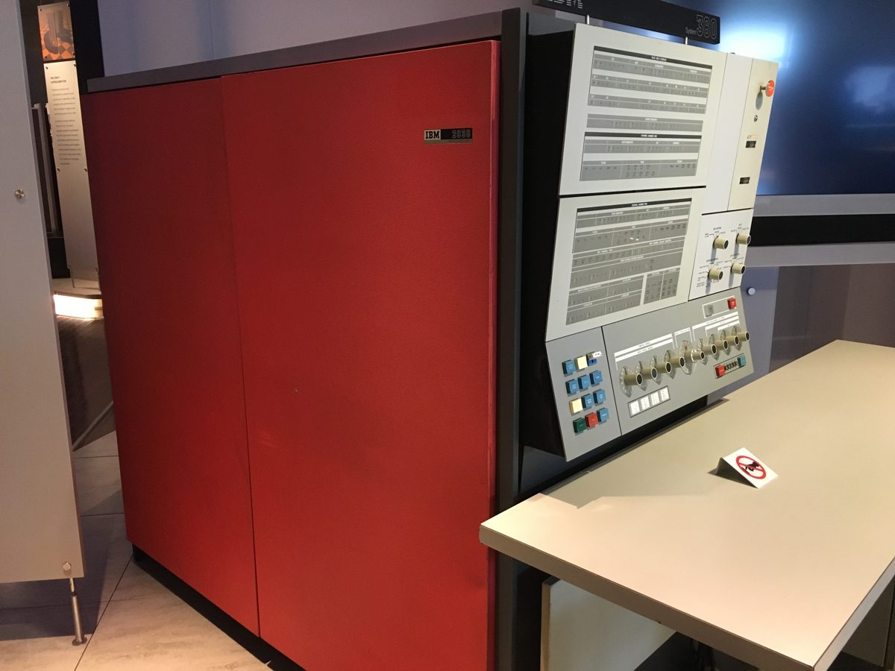
| Mốc | Sự kiện | Ý nghĩa |
|---|---|---|
| 1970 | Edgar F. Codd, mô hình quan hệ | Hỏi dữ liệu bằng ngôn ngữ, tách khỏi cách cất trên đĩa |
| 1976– | John Chambers và cộng sự làm ngôn ngữ S tại Bell Labs. R kế thừa dòng này | Phân tích trở thành việc viết được và làm lại được |
| 1989 | Gregory Piatetsky-Shapiro tổ chức hội thảo KDD đầu tiên | Đi tìm mẫu chưa biết, không chỉ kiểm giả thuyết có sẵn |
Nguồn: Codd, 1970, CACM · The R Project · KDD · IBM — System/360.
Khai phá dữ liệu chỉ là một khâu
Fayyad, Piatetsky-Shapiro và Smyth, From Data Mining to Knowledge Discovery in Databases.
Nguồn: Fayyad, Piatetsky-Shapiro & Smyth, 1996, AI Magazine.
Web đổi cả quy mô lẫn loại dữ liệu
- Berners-Lee xây World Wide Web tại CERN. Năm 1993, CERN đưa phần mềm Web vào phạm vi công cộng.
- Dữ liệu thêm văn bản, liên kết, nhật ký truy cập và hành vi — không còn chỉ là bảng đo đạc.
Nguồn: CERN — The birth of the Web.
Cái tên, và cách tính trên nhiều máy
| Mốc | Sự kiện | Ý nghĩa |
|---|---|---|
| 1997 | Theo Donoho (2017), C. F. Jeff Wu đề nghị xem thống kê như data science, và gọi nhà thống kê là data scientist | Thuật ngữ đã được bàn trong học thuật trước khi thành tên một nghề |
| 2001 | William Cleveland, Data Science: An Action Plan. Ông kéo thêm tính toán, trực quan hóa và ứng dụng | Một trong các văn bản ảnh hưởng trực tiếp tới việc coi đây là lĩnh vực riêng |
| 2003–2004 | Google công bố Google File System, rồi MapReduce của Jeffrey Dean và Sanjay Ghemawat | Chia dữ liệu và phép tính ra nhiều máy, chịu được lỗi. Hadoop sau này đi từ đây |
Nguồn: Donoho, 2017 · Cleveland, 2001 · Dean & Ghemawat, MapReduce, 2004.
Phân tích thành công nghiệp
| Mốc | Sự kiện | Ý nghĩa |
|---|---|---|
| 2006–2008 | Hadoop tách từ Nutch (Doug Cutting, Mike Cafarella), thành dự án Apache năm 2008. HDFS cộng MapReduce | Tổ chức xử lý nhật ký và dữ liệu web trên cụm máy phổ thông |
| 2009 | Hal Varian nói về người biết rút giá trị từ dữ liệu đang tăng | Kỹ năng này đi ra ngoài phòng thí nghiệm thống kê |
| 2010–2014 | Matei Zaharia và cộng sự: Spark (bài HotCloud 2010, Apache 2014). Xử lý nhiều việc trong bộ nhớ | Thêm một lối bên cạnh MapReduce theo lô, hợp với học máy và phân tích lặp |
| thập niên 2000 | R (Ihaka, Gentleman, từ S) và Python cùng thư viện số trở nên phổ biến | Công cụ mở làm người học lặp lại được kết quả của người khác |
Nguồn: Apache Hadoop · Zaharia et al., HotCloud 2010 · Apache Spark · R · Python.
Dữ liệu lớn gặp mạng nơ-ron sâu
- Fei-Fei Li và cộng sự xây ImageNet, bộ ảnh gán nhãn quy mô lớn.
- Năm 2012, AlexNet của Alex Krizhevsky, Ilya Sutskever và Geoffrey Hinton dẫn đầu cuộc thi nhận dạng ảnh ImageNet.
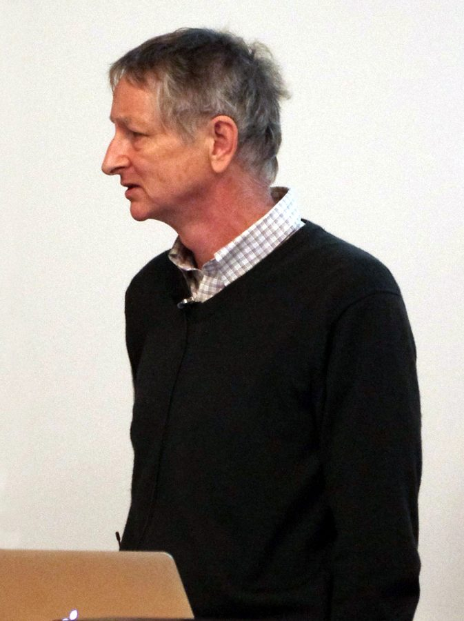
Nguồn: ImageNet · Krizhevsky, Sutskever & Hinton, NeurIPS 2012.
Transformer đổi cách đọc một chuỗi

Vaswani và cộng sự, Attention Is All You Need.
- Attention xét quan hệ giữa các phần của chuỗi, không phải đi lần lượt như mạng hồi quy.
- Kiến trúc này thành khung của phần lớn mô hình ngôn ngữ lớn và nhiều hệ đa phương thức.
Nguồn: Vaswani et al., 2017, NeurIPS.
Mô hình lớn đổi việc của dữ liệu
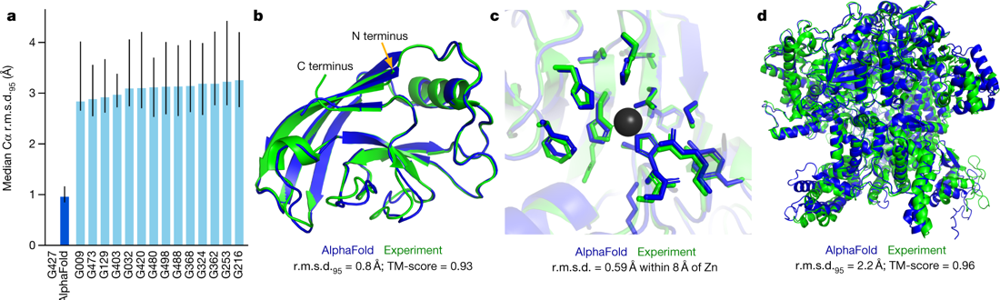
| Mốc | Sự kiện | Ý nghĩa |
|---|---|---|
| 2020 | Brown và cộng sự: GPT-3, 175 tỷ tham số, làm nhiều việc từ vài ví dụ trong ngữ cảnh | Quy mô dữ liệu và quy mô mô hình trở thành quyết định chiến lược. Nhiều tham số không bảo đảm đúng |
| 2020–2021 | AlphaFold 2 tại CASP14. Bài mô tả hệ thống đăng Nature năm 2021 | Dữ liệu sinh học, mô hình sâu và tri thức ngành cùng giải một bài toán khoa học |
| 30/11/2022 | OpenAI phát hành ChatGPT, bản xem trước nghiên cứu | Thêm việc: chất lượng dữ liệu huấn luyện, đánh giá đầu ra, sai lệch, giám sát |
Nguồn: Brown et al., 2020 · Jumper et al., 2021 · OpenAI — Introducing ChatGPT.
Công nhận khoa học, và phần chưa chốt
| Mốc | Sự kiện | Ý nghĩa |
|---|---|---|
| 2015 | Google mở mã TensorFlow | Huấn luyện và triển khai mô hình trở thành việc làm hệ thống, không chỉ việc viết thuật toán |
| 3/2016 | AlphaGo thắng Lee Sedol 4–1. Video nước đi 37, ván 2 | Học sâu, tìm kiếm và học tăng cường trên một việc khó. Công chúng bắt đầu nhìn thấy “học từ dữ liệu” |
| 3/2023 | GPT-4, báo cáo kỹ thuật nói cả năng lực lẫn hạn chế | Điểm số cao không thay cho đánh giá, an toàn và giám sát sau khi đưa ra dùng |
| 2024 | Nobel Vật lý: John Hopfield và Geoffrey Hinton. Nobel Hóa học: David Baker, Demis Hassabis và John Jumper | Công nhận các đóng góp cụ thể cho mạng nơ-ron và cho cấu trúc protein. Đây không phải giải Nobel của cả ngành data science |
Nguồn: TensorFlow · DeepMind — AlphaGo · GPT-4 Technical Report · Nobel Vật lý 2024 · Nobel Hóa học 2024.
4.
Vibe coding
Nói việc cần làm. Chạy. Đọc lại số. Sửa.
Vibe coding là việc gì?
- Mô tả việc bằng lời, để trợ lý lập trình viết code, chạy, rồi chỉnh tiếp.
- Cụm từ được Andrej Karpathy dùng từ đầu năm 2025 cho cách làm ấy.
- Trong môn này, người học vẫn là người chịu trách nhiệm với số và với câu kết luận.
Tại sao lại cần có kỹ năng làm việc với AI?
HumanEval, tỷ lệ bài lập trình làm đúng. Andrew Ng tổng hợp, 20/3/2024:
| Cách chạy | Bài đúng |
|---|---|
| GPT-3.5, một lượt | 48,1% |
| GPT-4, một lượt | 67,0% |
| GPT-3.5, vòng lặp agent | lên tới 95,1% |
Bước nhảy lớn nằm ở cách bố trí vòng lặp, không chỉ ở đời mô hình.
Ju và Aral, 2025, thí nghiệm 2.234 người làm quảng cáo: đội người–AI ra thêm 50% sản phẩm trên mỗi người, chữ tốt hơn, ảnh kém hơn đội người–người.
Nguồn: Andrew Ng, DeepLearning.AI, 20/3/2024 · Ju & Aral, 2025 · MIT Sloan.
Việc không mất cùng một lúc
- McKinsey, 2023. Công nghệ có thể đụng các hoạt động chiếm 60–70% thời gian làm. Kịch bản nhận dụng: một nửa hoạt động có thể được tự động hóa khoảng 2030–2060, điểm giữa năm 2045.
- Goldman Sachs, 2023. Tương đương 300 triệu việc làm toàn thời gian bị đụng tới. Phần lớn ngành chỉ mất một phần việc, nên dễ được bổ sung hơn là bị thay hẳn.
- World Economic Forum, 2025. 40% nhà tuyển dụng tính giảm người ở chỗ AI làm được việc. Hai phần ba tính tuyển người có kỹ năng AI.
- Draup, 2026. Số tin ngân hàng nhắc kỹ năng điều phối agent tăng 1.721% trong năm nay.
Nguồn: McKinsey, 2023 · Goldman Sachs, Briggs & Kodnani, 2023 · WEF, Future of Jobs 2025 · VnEconomy, 5/10/2026, dẫn Draup.
Prompt demo — bảy bước
- Tải đúng một tệp Santiago, ngày 29/6/2026.
- QA: dòng, cột trống, id trùng, miền của price.
- KPI trên các dòng còn giá.
- EDA: giá, loại phòng, khu phố, review và lịch trống.
- Đặc trưng, rồi K-means với k = 3, 4 và 5.
- Năm insight, ba hành động, mỗi câu một số.
- Một dashboard.html, mở được khi tắt mạng.
Prompt — tệp và QA
Vai trò. Bạn là trợ giảng khoa học dữ liệu. Viết một script Python chạy từ đầu đến cuối. Chỉ tải đúng một URL.
Dữ liệu. https://data.insideairbnb.com/chile/rm/santiago/2026-06-29/visualisations/listings.csv — mỗi dòng là một listing. Dùng đúng cột có trong tệp. neighbourhood_group trống toàn bộ: ghi vào QA, không điền bù. price là số, tệp không ghi đơn vị tiền: không gắn USD hay CLP.
QA. In số dòng, số cột, số id trùng, số giá trống, số last_review trống, số reviews_per_month trống. Hai số review trống phải bằng nhau. In min, median, max của price. Không xóa outlier im lặng.
Prompt — KPI, EDA, K-means
KPI. Trên dòng còn giá: số listing, tỷ lệ Entire home/apt, median price, tỷ lệ availability_365 = 0, median number_of_reviews, tỷ lệ listing có calculated_host_listings_count ≥ 5.
EDA. Phân phối price, price theo room_type, top 10 neighbourhood theo số listing, và number_of_reviews với availability_365. Mỗi hình ghi tên cột và số dòng đã dùng.
K-means. random_state=42. Chỉ dòng có price. Chuẩn hóa: price, minimum_nights, number_of_reviews, availability_365, calculated_host_listings_count, cộng mã room_type. Thử k = 3, 4, 5, báo inertia, chọn một k và nói vì sao. Đặt tên nhóm bằng median của các cột ấy.
Prompt — insight và dashboard
Insight. Đúng năm câu. Mỗi câu có một số vừa in, và nói số ấy trả lời câu hỏi nào của người cho thuê. Không bịa doanh thu, công suất phòng, hay đơn vị tiền.
Hành động. Đúng ba việc. Mỗi việc chỉ một nhóm K-means hoặc một KPI, và chỉ ai làm.
Dashboard. Một dashboard.html. Sáu khối: QA, KPI, EDA, K-means, insight, hành động. Biểu đồ nằm trong file.
Ràng buộc. pandas, scikit-learn, và một thư viện vẽ. Không gọi mạng ngoài URL trên.
Tự kiểm. In số dòng, số giá trống, số id trùng, k đã chọn, tổng kích thước các nhóm. Tổng nhóm phải bằng số dòng đưa vào K-means. Lệch thì dừng, không viết insight.
Toàn bộ prompt
Vai trò. Bạn là trợ giảng khoa học dữ liệu. Viết một script Python chạy từ đầu đến cuối. Chỉ tải đúng một URL.
Dữ liệu. https://data.insideairbnb.com/chile/rm/santiago/2026-06-29/visualisations/listings.csv — mỗi dòng là một listing. Dùng đúng cột có trong tệp. neighbourhood_group trống toàn bộ: ghi vào QA, không điền bù. price là số, tệp không ghi đơn vị tiền: không gắn USD hay CLP.
QA. In số dòng, số cột, số id trùng, số giá trống, số last_review trống, số reviews_per_month trống. Hai số review trống phải bằng nhau. In min, median, max của price. Không xóa outlier im lặng.
KPI. Trên dòng còn giá: số listing, tỷ lệ Entire home/apt, median price, tỷ lệ availability_365 = 0, median number_of_reviews, tỷ lệ listing có calculated_host_listings_count ≥ 5.
EDA. Phân phối price, price theo room_type, top 10 neighbourhood theo số listing, và number_of_reviews với availability_365. Mỗi hình ghi tên cột và số dòng đã dùng.
K-means. random_state=42. Chỉ dòng có price. Chuẩn hóa: price, minimum_nights, number_of_reviews, availability_365, calculated_host_listings_count, cộng mã room_type. Thử k = 3, 4, 5, báo inertia, chọn một k và nói vì sao. Đặt tên nhóm bằng median của các cột ấy.
Insight. Đúng năm câu. Mỗi câu có một số vừa in, và nói số ấy trả lời câu hỏi nào của người cho thuê. Không bịa doanh thu, công suất phòng, hay đơn vị tiền.
Hành động. Đúng ba việc. Mỗi việc chỉ một nhóm K-means hoặc một KPI, và chỉ ai làm.
Dashboard. Một dashboard.html. Sáu khối: QA, KPI, EDA, K-means, insight, hành động. Biểu đồ nằm trong file.
Ràng buộc. pandas, scikit-learn, và một thư viện vẽ. Không gọi mạng ngoài URL trên.
Tự kiểm. In số dòng, số giá trống, số id trùng, k đã chọn, tổng kích thước các nhóm. Tổng nhóm phải bằng số dòng đưa vào K-means. Lệch thì dừng, không viết insight.
Vì sao khóa URL và QA
Vì sao khóa K-means và dashboard
Số để đối chiếu
url = "https://data.insideairbnb.com/chile/rm/santiago/2026-06-29/visualisations/listings.csv"
raw = pd.read_csv(url)
print(len(raw), raw["id"].duplicated().sum(), raw["price"].isna().sum())
Đếm trên tệp Inside Airbnb, Santiago, đường dẫn ngày 29/6/2026. Máy chủ ghi lần sửa 2/7/2026. listings.csv.
Dashboard phải có đủ sáu khối
- QA — dòng, cột trống, id, min, median, max của price.
- KPI — sáu số đã khóa trong prompt.
- EDA — bốn biểu đồ, mỗi hình ghi số dòng.
- K-means — k đã chọn, inertia của 3, 4, 5, và median từng nhóm.
- Năm insight, mỗi câu một số.
- Ba hành động, mỗi việc một người làm.
Sau khi trợ lý trả code
- Chạy lại. Dòng in ra phải là 18.534, 0, 846.
- Mở dashboard.html khi đã tắt mạng. Thiếu một khối thì chưa xong.
- Mỗi insight chỉ một cột có thật. Tệp không ghi đơn vị tiền thì không gắn ký hiệu.
- Tổng kích thước các nhóm lệch với số dòng đưa vào thì sửa, rồi chạy lại.
5.
Cách học
và quy chế
Ba việc sau mỗi buổi
Cơ cấu môn học
Tuần lẻ học lý thuyết. Tuần chẵn có một bài trắc nghiệm trên giấy. Tuần 8 là giữa kỳ, không thêm bài chuyên cần.
| Bài | Khi nào | Hình thức |
|---|---|---|
| Chuyên cần | Tuần chẵn: 2, 4, 6, 10, 12, 14 | Trắc nghiệm trên giấy |
| Giữa kỳ | Tuần 8 | Trắc nghiệm và tự luận trên giấy |
| Cuối kỳ | Tuần 15–16 | Trắc nghiệm và tự luận trên giấy. Phòng đào tạo thông báo lịch sau |
6.
Học liệu
Hai mươi cuốn, đi từ toán tới dữ liệu lớn. Một cuốn không thay cả môn.
Hai mươi giáo trình

Deisenroth, Faisal, Ong
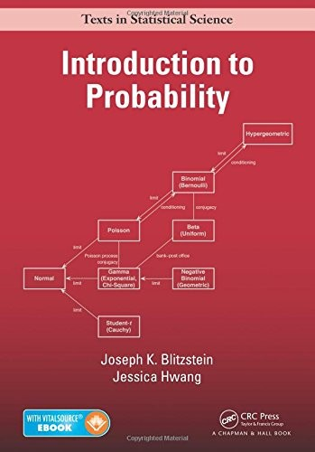
Blitzstein, Hwang
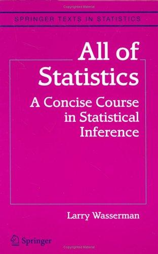
Wasserman
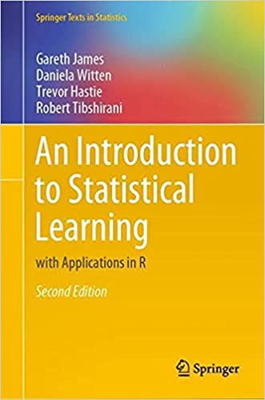
James et al.
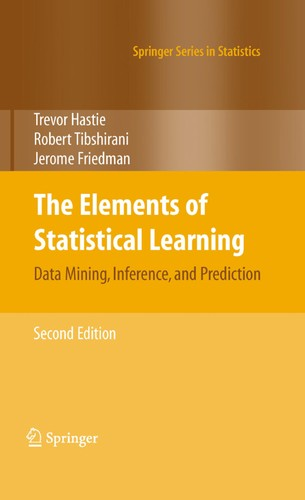
Hastie et al.
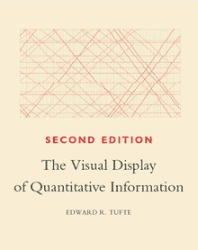
Tufte
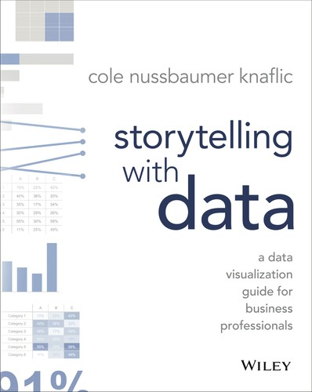
Knaflic
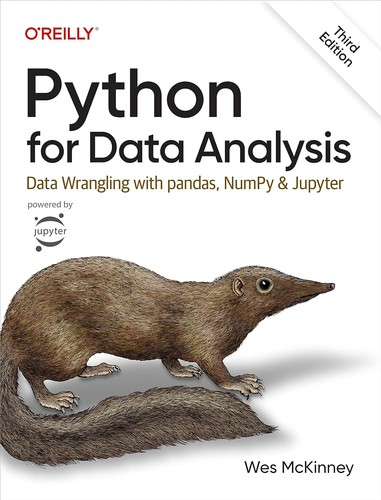
McKinney
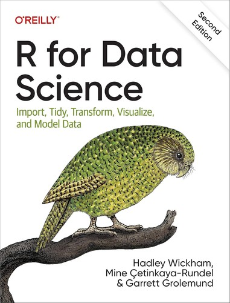
Wickham et al.
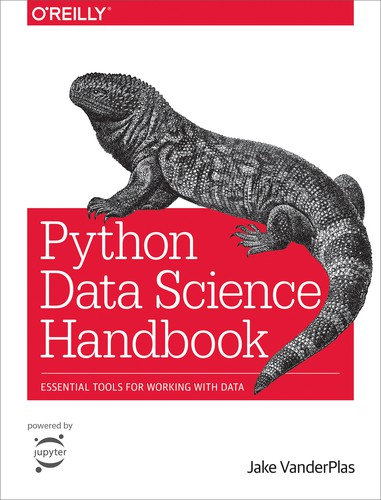
VanderPlas
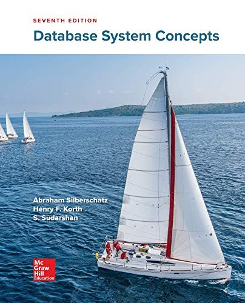
Silberschatz et al.

Kleppmann
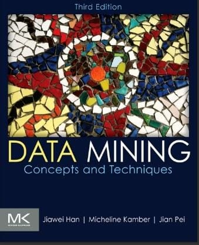
Han, Kamber, Pei
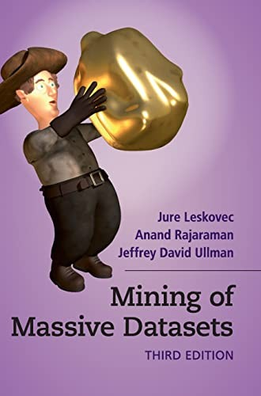
Leskovec et al.
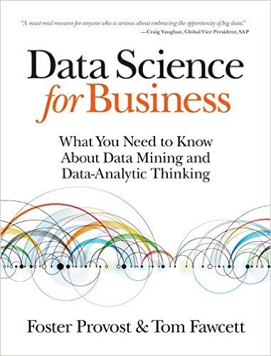
Provost, Fawcett
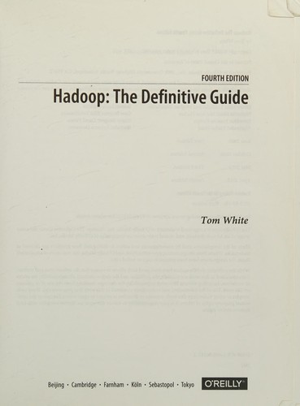
White
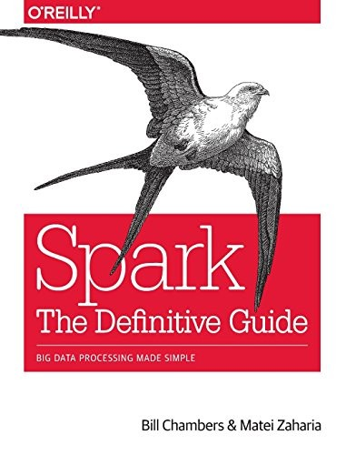
Chambers, Zaharia
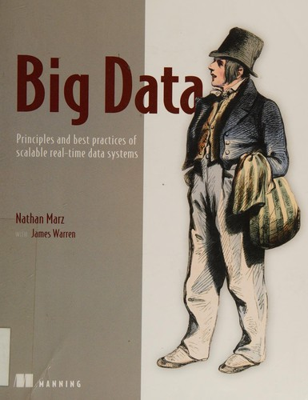
Marz, Warren
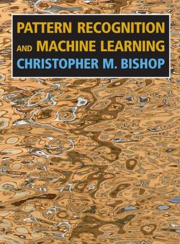
Bishop
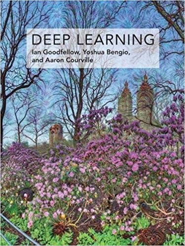
Goodfellow et al.
Ảnh bìa lấy qua Open Library Cover API để nhận diện sách. Tên đầy đủ và bản đọc miễn phí ở slide sau.
Toán, thống kê, trực quan, xử lý
- Deisenroth, Faisal, Ong — Mathematics for Machine Learning
- Blitzstein, Hwang — Introduction to Probability
- Wasserman — All of Statistics
- James, Witten, Hastie, Tibshirani — An Introduction to Statistical Learning
- Hastie, Tibshirani, Friedman — The Elements of Statistical Learning
- Tufte — The Visual Display of Quantitative Information
- Knaflic — Storytelling with Data
- McKinney — Python for Data Analysis
- Wickham, Çetinkaya-Rundel, Grolemund — R for Data Science
- VanderPlas — Python Data Science Handbook
Liên kết là bản tác giả hoặc nhà xuất bản cho đọc miễn phí.
Cơ sở dữ liệu, khai phá, big data
- Silberschatz, Korth, Sudarshan — Database System Concepts
- Kleppmann — Designing Data-Intensive Applications
- Han, Kamber, Pei — Data Mining: Concepts and Techniques
- Leskovec, Rajaraman, Ullman — Mining of Massive Datasets
- Provost, Fawcett — Data Science for Business
- White — Hadoop: The Definitive Guide
- Chambers, Zaharia — Spark: The Definitive Guide
- Marz, Warren — Big Data
- Bishop — Pattern Recognition and Machine Learning
- Goodfellow, Bengio, Courville — Deep Learning
Cuốn không có liên kết: dùng bản in hoặc thư viện trường. Một cuốn không thay cả môn.
Tổng kết buổi 1
- Dữ liệu có năm cách nhìn. Mặt trời mọc 1.000 ngày chưa bảo đảm ngày thứ 1.001.
- Khoa học dữ liệu là giao của toán học, khoa học máy tính và kiến thức nghiệp vụ.
- Ngành này không có một ngày khai sinh. Đọc từng mốc kèm nguồn.
- Vibe coding được dùng khi prompt khóa tệp, khóa việc, và có bước tự kiểm.
- Học bằng keyword, mũi tên nối, rồi bài gốc. Thi trên giấy: chuyên cần các tuần chẵn, giữa kỳ tuần 8, cuối kỳ tuần 15–16.
Việc trước buổi sau
- Ghi keyword xuất hiện hôm nay. Kéo ít nhất bốn mũi tên nối.
- Mở một nguồn ở chân slide lịch sử. Ghi năm công bố và một câu tác giả thực sự nói.
- Chạy prompt Inside Airbnb. Script phải in 18.534 dòng và 846 giá trống.